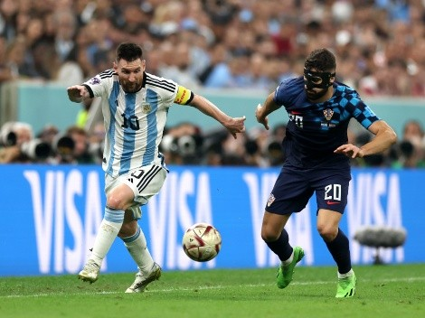
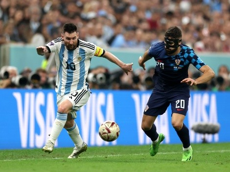

El primer paso en el mundial... Siempre un estrecho en el camino del seleccionado argentino. Esta vez parecía que podíamos tener un comienzo menos convulsivo. Enfrente un rival de menor calibre, un equipo inferior técnica y funcionalmente. Ó al menos eso creímos, porque cuando uno gana confianza queda muy cerca de la subestimación al rival, pero como un mero acto de irresponsabilidad y no de irrespeto hacia los contrarios. Teníamos a cuestas el récord de invicto, y no lo teníamos como espalda de garantía, más bien como mochila. Durante todo el encuentro Argentina se sintió incómodo con el planteo saudí, a pesar de encontrar el gol (y sumarle relajación a esa incomodidad). Arabia Saudita con un gran despliegue físico y táctico le cedió la pelota a Argentina (conociéndose que tampoco la iba a poder conservar) y apostó en hacer daño con velocidad, vértigo y explosión. Los sauditas emularon la revolución de la primavera árabe en su ataque y con esos golpes dejaron en shock al equipo argentino. No quedaba otra que despertar.
Como esa llave secreta, especial y única que está hecha para abrir aquella puerta que guarda las riquezas más grandes, de esa forma se manifestó nuestro capitán. Fue un partido cerrado, sin espacios, contra un rival que después de varias veces tenía la chance de tener una venganza deportiva sobre Argentina. Nuestra selección demanda tanto respeto que aún luego de una fuerte caída como lo fue con Arabia, México salió solo a defenderse, a cuidar no ser dañado, a no perder. Pero los resultados positivos generalmente son para quienes los buscan, son para aquellos que no se conforman con poco, arriesgan y van, y van, y van. Había transcurrido la mayor parte del partido cuando nuestro Ángel vió un lugar por dónde darle la pelota a nuestro capitán, que tenía el tiempo necesario (muy poco pero suficiente) para acomodar la pelota y sacar un zurdazo que a medida que se acercaba al arco se alejaba de las intenciones del Memo de evitar lo inevitable: el gol argentino. Luego de ese momento llegó la hora de jugar con la desesperación de México, mostrarle la pelotita y hacerlo correr. En medio de ese dominio vino el segundo. Un golazo de un joven que le cambió la cara a Argentina, demostrando junto a Mcallister y Álvarez que hay poder de fuego en el futuro del seleccionado.


 
